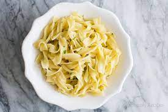

How to cook a good Buttered Noodles

Saucy, buttered noodles are simple to make and perfect to serve either as-is or alongside steak, chicken, or meatballs.
Ingredients
- 1(16 ounce) package fettuccine noodles
- 6 tablespoons butter, cut into pieces
- 1/3 cup grated Parmesan cheese
- Salt and ground black pepper to taste
Steps
- Gather all Ingredients
- Fill a large pot with lightly salted water and bring to a rolling boil
- Stir in fettuccine, bring back to a boil, and cook pasta over medium heat until tender yet firm to the bite, 8 to 10 minutes.
- Drain and return pasta to pot. Mix butter, Parmesan cheese, salt, and pepper into pasta until evenly combined.
- Serve hot and enjoy!